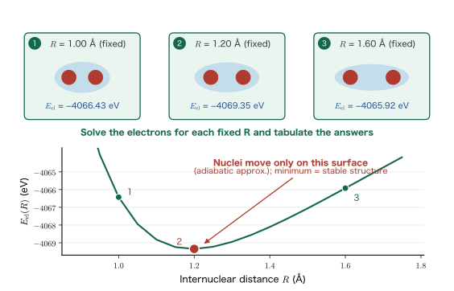
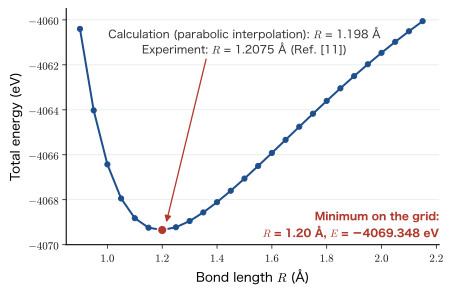
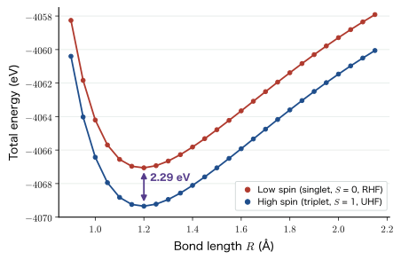
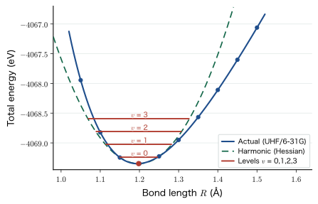

Chapter 8The Born–Oppenheimer Approximation and Geometry Optimization
Through Chapter 7, armed with the variational principle and perturbation theory, we have been computing the “energies” of the hydrogen and helium atoms. But what kind of energy were those numbers, exactly? Were they the energy of the electrons alone, or the energy of the whole system including the nuclei? If we leave this ambiguous, we cannot correctly interpret the molecular and solid-state calculations ahead of us—finding bond lengths, finding lattice constants, deciding which crystal structure is more stable. In this chapter we first define the “total energy” by decomposing it into five terms, and then introduce a bold approximation that discards only the kinetic energy of the nuclei: the Born–Oppenheimer approximation. This approximation is the basic premise on which almost all modern quantum-chemical and density functional theory calculations stand. Only with it does the concept of the “potential energy surface” arise, can the “force acting on an atom” be defined, and does the algorithm of “geometry optimization” become possible. In the second half, we compute the total energy of the oxygen molecule $\mathrm{O}_2$ while varying its bond length from $0.9\ \text{Å}$ to $2.15\ \text{Å}$, and draw with our own hands the interatomic potential curve that appears in every textbook. We then prove the Hellmann–Feynman theorem completely, and connect the calculation of forces to structural relaxation in a single line of argument.
- That the full Hamiltonian of a molecular system consists of five terms ($\hat{T}_{\mathrm{Nu}},\ \hat{T}_{\mathrm{el}},\ V_{\mathrm{Nu\text{-}el}},\ V_{\mathrm{Nu\text{-}Nu}},\ V_{\mathrm{el\text{-}el}}$)
- That the product approximation $\Psi(\bm{r},\bm{R})\simeq\Psi_{\mathrm{el}}(\bm{r},\bm{R})\Psi_{\mathrm{Nu}}(\bm{R})$ follows from the fact that protons and neutrons are about 1836 times heavier than electrons
- That the nuclear coordinates $\bm{R}$ enter the electronic wave function as parameters, not as variables, and that a complete separation of variables is therefore impossible
- That the total energy $E\simeq\min_{\bm{R}}E_{\mathrm{el}}(\bm{R})$ is the internal energy at absolute zero ($0\ \mathrm{K}$), and that at finite temperature the entropy is needed
- The adiabatic approximation, restated as “the ions move only on the potential energy surface of the electronic ground state,” and the two-stage minimization
- The procedure for actually computing the total-energy curve of $\mathrm{O}_2$ (xyz files,
sed,forloops,grep,awk, and matplotlib) - Why triplet oxygen is the ground state, and why liquid oxygen is attracted to a magnet
- A complete proof of the Hellmann–Feynman theorem $\bm{F}_I=-\bra{\Psi_{\mathrm{el}}}\nabla_I(\Ham_{\mathrm{el}}+V_{\mathrm{Nu\text{-}Nu}})\ket{\Psi_{\mathrm{el}}}$, and a caution about the Pulay force
- The Hessian matrix, force constants, and vibrational frequencies, and structural relaxation by the steepest descent method and the quasi-Newton method (BFGS)
8.1 What Kind of Energy Is the “Total Energy”?
From Chapter 2 through Chapter 7, we have used the word “energy” without examining it very closely. The $1s$ level of the hydrogen atom, $\epsilon_{1s}=-13.606\ \mathrm{eV}$, the ground-state energy of the helium atom, the approximate values obtained with Gaussian basis functions—what kind of energy were these? Were they the internal energy of the electrons? Or the free energy of the whole system, including the nuclei? Answering this question properly is the starting point of this chapter.
8.1.1 The case of an atom: three terms
Consider a system of $n$ electrons around a single nucleus of atomic number $Z$. We assume that the nucleus is fixed at the origin. Three terms contribute to the energy of this system.
First, the kinetic energy of the electrons. The kinetic energy operator of one electron is $\hat{\bm{p}}^2/2m=-\hbar^2\nabla^2/2m$, so summing over the $n$ electrons gives
$$ \hat{T}_{\mathrm{el}}=\sum_{i=1}^{n}\left(-\frac{\hbar^2}{2m}\nabla_i^2\right). $$Second, the potential energy of the electrons due to the nuclei. The Coulomb energy between a nucleus of charge $+Z\ee$ and an electron of charge $-\ee$ is negative (attractive):
$$ V_{\mathrm{Nu\text{-}el}}=-\sum_{i=1}^{n}\frac{Z\ee^{2}}{4\pi\eps\, r_i},\qquad r_i=\abs{\bm{r}_i}. $$Third, the electron–electron repulsion. This is positive (repulsive):
$$ V_{\mathrm{el\text{-}el}}=\frac{1}{2}\sum_{i=1}^{n}\sum_{j\neq i}\frac{\ee^{2}}{4\pi\eps\abs{\bm{r}_i-\bm{r}_j}} . $$The sum of the three is the full Hamiltonian of the atom:
$$ \begin{equation} \Ham_{\text{atom}} =\sum_{i=1}^{n}\left(-\frac{\hbar^2}{2m}\nabla_i^2\right) -\sum_{i=1}^{n}\frac{Z\ee^{2}}{4\pi\eps\, r_i} +\frac{1}{2}\sum_{i=1}^{n}\sum_{j\neq i}\frac{\ee^{2}}{4\pi\eps\abs{\bm{r}_i-\bm{r}_j}} . \label{eq:8-atom-hamiltonian} \end{equation} $$Math Note: The $\tfrac12$ and $j\neq i$ in the double sum
The electron–electron repulsion term is often written simply as $\sum_j\sum_i$, but this is an abbreviation of the notation. Properly, one must exclude pairs of an electron with itself ($i=j$) (the term would diverge because $\abs{\bm{r}_i-\bm{r}_i}=0$), and multiply by $\tfrac12$ so as not to count $(i,j)$ and $(j,i)$ twice. $\tfrac12\sum_i\sum_{j\neq i}$ and $\sum_{i\lt j}$ are the same thing. For $n=3$ the number of terms in the sum is $\tfrac12\times3\times2=3$, namely the three pairs $(1,2),(1,3),(2,3)$, and the two indeed agree. This book adopts this convention throughout.
8.1.2 The case of a molecule: nuclear–nuclear repulsion is added
Equation \eqref{eq:8-atom-hamiltonian} was for the case of a single nucleus. When there are two or more nuclei, a new term appears: the Coulomb repulsion between nuclei. The charge of nucleus $I$ is $+Z_I\ee$ and its position is $\bm{R}_I$, so
$$ V_{\mathrm{Nu\text{-}Nu}}=\frac{1}{2}\sum_{I=1}^{N}\sum_{J\neq I}\frac{Z_IZ_J\ee^{2}}{4\pi\eps\abs{\bm{R}_I-\bm{R}_J}} . $$This term contains no electron coordinates at all. Once the nuclear positions $\bm{R}=\{\bm{R}_1,\dots,\bm{R}_N\}$ are fixed, it is just a number (a constant). As we will see later, this property of being “a constant from the electrons’ point of view” is the key to the whole argument of this chapter.
Furthermore, if the nuclei move, their kinetic energy must be included as well. Let the mass of nucleus $I$ be $M_I$ and its momentum operator be $\hat{\bm{P}}_I=-i\hbar\nabla_I$. Then
$$ \hat{T}_{\mathrm{Nu}}=\sum_{I=1}^{N}\frac{\hat{\bm{P}}_I^{2}}{2M_I}=\sum_{I=1}^{N}\left(-\frac{\hbar^{2}}{2M_I}\nabla_I^{2}\right). $$Collecting all of the above, we obtain the exact Hamiltonian of a system of $N$ nuclei and $n$ electrons. This is the starting point of this chapter, and an equation to which we will refer many times from here on.
The meaning of the five terms is illustrated in Figure 8.1(a). Note that no approximation has entered this equation itself. It is true that this is restricted to a nonrelativistic treatment that neglects relativistic effects and the spin–orbit interaction, but within that framework Eq. \eqref{eq:8-full-hamiltonian} is exact. Nevertheless, up through Chapter 7 we never once carried out a calculation that solved this equation as it stands. The kinetic energy of the nuclei, $\hat{T}_{\mathrm{Nu}}$, had quietly disappeared.
Hmm? Why is it all right not to consider the kinetic energy of the nuclei?
Example 8.1: Counting the terms of the Hamiltonian for a water molecule
For the water molecule $\mathrm{H_2O}$, count how many terms are summed in each of the five terms of Eq. \eqref{eq:8-full-hamiltonian}. Also, of how many real variables is the wave function $\Psi$ a function (excluding spin)?
Solution. The nuclei are one O and two H, so $N=3$. The number of electrons is $8+1+1=10$, so $n=10$.
- $\hat{T}_{\mathrm{Nu}}$: one term per nucleus, so $N=3$ terms.
- $\hat{T}_{\mathrm{el}}$: one term per electron, so $n=10$ terms.
- $V_{\mathrm{Nu\text{-}el}}$: one term for every nucleus–electron pair, so $N\times n=3\times10=30$ terms.
- $V_{\mathrm{Nu\text{-}Nu}}$: the number of nuclear pairs, so $\dbinom{3}{2}=3$ terms.
- $V_{\mathrm{el\text{-}el}}$: the number of electron pairs, so $\dbinom{10}{2}=\dfrac{10\times9}{2}=45$ terms.
The total is $3+10+30+3+45=91$ terms. As for the number of variables, the nuclei contribute $3\times3=9$ and the electrons $3\times10=30$, for a total of $39$. Even for a molecule of only three atoms, this is a partial differential equation in a 39-dimensional space, and there is no way to solve it head-on. This is exactly why an approximation that reduces the number of variables is needed.
8.2 The Born–Oppenheimer Approximation
8.2.1 Starting from the single remark that the nuclei are heavy
The protons and neutrons that make up an atomic nucleus are orders of magnitude heavier than an electron. To be precise,
$$ \begin{equation} \frac{m_{\mathrm{p}}}{m}=\frac{1.6726\times10^{-27}\ \mathrm{kg}}{9.1094\times10^{-31}\ \mathrm{kg}}=1836.15\simeq1840 \label{eq:8-mass-ratio} \end{equation} $$The ratio in Eq. \eqref{eq:8-mass-ratio} becomes $A$ times larger for a nucleus of mass number $A$. For example, the nucleus of oxygen ($A=16$) is about $2.9\times10^{4}$ times heavier than an electron.
Why? May we regard heavy objects as “standing still”?
Being massive does not by itself mean “not moving.” What matters is the speed. Nuclei and electrons are bound together by the Coulomb force, so the momentum $P$ they exchange can be regarded as being of the same order. The speed is then $v=P/M$, so it is inversely proportional to the mass:
$$\frac{v_{\text{nuc}}}{v_{\text{el}}}\sim\frac{m}{M}\sim\frac{1}{1836}$$While an electron goes once around an atom, a nucleus moves only $1/1836$ of a revolution. In other words, from the electron's point of view, the nuclei are effectively nailed to the spot. Conversely, from the nuclei's point of view, the electrons are too fast for their individual positions to be followed, and are felt only as a smoothly spread-out “electron cloud.” The idea of the Born–Oppenheimer approximation is to split these two ways of seeing things into separate problems.
Example 8.2: Actually estimating the time scales
(1) The speed of the $1s$ electron of the hydrogen atom is $v=\alpha c=2.19\times10^{6}\ \mathrm{m/s}$ ($\alpha$ is the fine-structure constant). Find the time required to go once around a circle of the Bohr radius $a_0=0.529\times10^{-10}\ \mathrm{m}$.
(2) The measured vibrational frequency of the oxygen molecule is $\tilde{\nu}=1580\ \mathrm{cm^{-1}}$. Find the period of the vibration and compare it with (1).
Solution. (1) The time for one revolution is
$$T_{\mathrm{el}}=\frac{2\pi a_0}{v}=\frac{2\pi\times0.529\times10^{-10}}{2.19\times10^{6}}=1.52\times10^{-16}\ \mathrm{s}=0.152\ \mathrm{fs}.$$(2) The frequency corresponding to the wavenumber $\tilde\nu$ is $\nu=c\tilde\nu=2.998\times10^{10}\ \mathrm{cm/s}\times1580\ \mathrm{cm^{-1}}=4.74\times10^{13}\ \mathrm{Hz}$, so the period is
$$T_{\mathrm{vib}}=\frac{1}{\nu}=2.11\times10^{-14}\ \mathrm{s}=21.1\ \mathrm{fs}.$$The ratio is $T_{\mathrm{vib}}/T_{\mathrm{el}}\simeq139$. During one stretch and contraction of the nuclei, the electron goes around about 140 times. We may regard the electrons as being able to follow the motion of the nuclei instantaneously.
8.2.2 Splitting the wave function into a product
Let us turn the picture just described into equations. We write the nuclear coordinates collectively as $\bm{R}=\{\bm{R}_1,\bm{R}_2,\dots,\bm{R}_N\}$ and the electron coordinates collectively as $\bm{r}=\{\bm{r}_1,\bm{r}_2,\dots,\bm{r}_n\}$. We approximate the wave function $\Psi(\bm{r},\bm{R})$ of the whole system by the product of an electronic wave function and a nuclear wave function.
Definition: The Born–Oppenheimer approximation
Let $\Psi_{\mathrm{Nu}}(\bm{R})$ be the nuclear wave function and $\Psi_{\mathrm{el}}(\bm{r},\bm{R})$ the electronic wave function. The approximation that writes the wave function of the whole system in the product form
$$ \begin{equation} \Psi(\bm{r},\bm{R})\ \simeq\ \Psi_{\mathrm{el}}(\bm{r},\bm{R})\,\Psi_{\mathrm{Nu}}(\bm{R}) \label{eq:8-bo-product} \end{equation} $$is called the Born–Oppenheimer approximation (BO approximation). It was put forward by M. Born and J. R. Oppenheimer in 1927 (Ref. [4]).
The most important point of this equation is that $\Psi_{\mathrm{el}}$ depends not only on $\bm{r}$ but also on $\bm{R}$. The potential felt by the electrons changes with where the nuclei are placed, so it is only natural that the electronic state depends on the nuclear configuration. However, the manner of this dependence is completely different from that on $\bm{r}$.
Caution: Do not confuse “variables” with “parameters”
In $\Psi_{\mathrm{el}}(\bm{r},\bm{R})$, $\bm{r}$ is a variable but $\bm{R}$ is a parameter. This is not a mere notational distinction; it is essential in the following two senses.
- When we solve the electronic Schrödinger equation, we differentiate only with respect to $\bm{r}$ and treat $\bm{R}$ as a constant.
- Normalization is carried out only with respect to $\bm{r}$: $\displaystyle\int\abs{\Psi_{\mathrm{el}}(\bm{r},\bm{R})}^{2}\dd\bm{r}=1$ holds for every $\bm{R}$.
Each time we fix a value of $\bm{R}$, one electronic problem is set up and one answer comes out. If we change $\bm{R}$ a little at a time, we obtain a sequence of answers $E_{\mathrm{el}}(\bm{R})$. This procedure of “solving over and over while shifting $\bm{R}$” is exactly what we actually do for $\mathrm{O}_2$ in Section 8.5.
8.3 Mathematical Formulation
From here on we substitute Eq. \eqref{eq:8-bo-product} into Eq. \eqref{eq:8-full-hamiltonian} and check, one step at a time, what happens. The calculation is long, but each step is nothing more than the product rule of differentiation from high school mathematics.
8.3.1 Shortening the notation
Writing out all the sums every time is cumbersome, so we denote each of the five terms of Eq. \eqref{eq:8-full-hamiltonian} by a single symbol. The Schrödinger equation $\Ham\Psi=E\Psi$ can be written as
$$ \begin{equation} \Bigl[\hat{T}_{\mathrm{Nu}}+\hat{T}_{\mathrm{el}}+V_{\mathrm{Nu\text{-}Nu}}(\bm{R})+V_{\mathrm{el\text{-}el}}(\bm{r})+V_{\mathrm{Nu\text{-}el}}(\bm{r},\bm{R})\Bigr]\Psi(\bm{r},\bm{R})=E\,\Psi(\bm{r},\bm{R}) \label{eq:8-shorthand} \end{equation} $$Pay attention to which variables each term in the brackets depends on. $V_{\mathrm{Nu\text{-}Nu}}$ depends only on $\bm{R}$, $V_{\mathrm{el\text{-}el}}$ depends only on $\bm{r}$, and only $V_{\mathrm{Nu\text{-}el}}$ contains both $\bm{r}$ and $\bm{R}$. This last term is the culprit behind the fact, which we will see shortly, that “the variables cannot be separated completely.”
8.3.2 Substituting the product and expanding the nuclear kinetic energy
We substitute $\Psi=\Psi_{\mathrm{el}}\Psi_{\mathrm{Nu}}$. The potential terms are merely multiplications, so nothing happens to them. Since $\hat{T}_{\mathrm{el}}$ differentiates with respect to $\bm{r}$, it passes straight through $\Psi_{\mathrm{Nu}}(\bm{R})$:
$$ \hat{T}_{\mathrm{el}}\bigl[\Psi_{\mathrm{el}}\Psi_{\mathrm{Nu}}\bigr] =\Psi_{\mathrm{Nu}}(\bm{R})\,\hat{T}_{\mathrm{el}}\Psi_{\mathrm{el}}(\bm{r},\bm{R}). $$The problem is $\hat{T}_{\mathrm{Nu}}$. Since $\nabla_I$ is the derivative with respect to the nuclear coordinate $\bm{R}_I$, both $\Psi_{\mathrm{el}}$ and $\Psi_{\mathrm{Nu}}$ get differentiated. Using the product rule of differentiation twice, we obtain
$$ \begin{equation} \nabla_I^{2}\bigl[\Psi_{\mathrm{el}}\Psi_{\mathrm{Nu}}\bigr] =\Psi_{\mathrm{el}}\,\nabla_I^{2}\Psi_{\mathrm{Nu}} +2\bigl(\nabla_I\Psi_{\mathrm{el}}\bigr)\!\cdot\!\bigl(\nabla_I\Psi_{\mathrm{Nu}}\bigr) +\Psi_{\mathrm{Nu}}\,\nabla_I^{2}\Psi_{\mathrm{el}} \label{eq:8-laplacian-product} \end{equation} $$Let us check this in one dimension. For $f(R)g(R)$ we have $(fg)'=f'g+fg'$, and differentiating once more, $(fg)''=f''g+2f'g'+fg''$. Eq. \eqref{eq:8-laplacian-product} is nothing other than this with $f=\Psi_{\mathrm{Nu}}$ and $g=\Psi_{\mathrm{el}}$.
Therefore the action of $\hat{T}_{\mathrm{Nu}}$ can be written as
$$ \hat{T}_{\mathrm{Nu}}\bigl[\Psi_{\mathrm{el}}\Psi_{\mathrm{Nu}}\bigr] =\Psi_{\mathrm{el}}\bigl[\hat{T}_{\mathrm{Nu}}\Psi_{\mathrm{Nu}}\bigr] \;\underbrace{-\sum_{I}\frac{\hbar^{2}}{M_I}\bigl(\nabla_I\Psi_{\mathrm{el}}\bigr)\!\cdot\!\bigl(\nabla_I\Psi_{\mathrm{Nu}}\bigr) -\sum_{I}\frac{\hbar^{2}}{2M_I}\Psi_{\mathrm{Nu}}\nabla_I^{2}\Psi_{\mathrm{el}}}_{\displaystyle \equiv\ \hat{\Lambda}\ \text{(nonadiabatic coupling terms)}} $$The second and third terms taken together are called the nonadiabatic coupling terms, or the derivative coupling terms.
Why? The reason we may discard the nonadiabatic coupling terms
Both terms of the nonadiabatic coupling term $\hat{\Lambda}$ carry a factor $1/M_I$. The nuclear mass is several thousand to several hundred thousand times the electron mass, so the coefficient is already small for this reason alone. In addition, $\nabla_I\Psi_{\mathrm{el}}$ and $\nabla_I^{2}\Psi_{\mathrm{el}}$ are quantities that express “how much the electronic wave function changes when the nuclei are moved slightly.” As we saw in Section 8.2, the electrons follow the motion of the nuclei instantaneously and merely change their shape smoothly, so these do not become large quantities. Since this is a small coefficient × a small quantity, we may drop the whole of $\hat{\Lambda}$; that is the content of the BO approximation.
Conversely, at places where the energies of two electronic states come close (conical intersections), $\Psi_{\mathrm{el}}$ changes drastically with a slight change in $\bm{R}$, so $\nabla_I\Psi_{\mathrm{el}}$ becomes divergently large and the BO approximation breaks down. Photochemical reactions and nonradiative deactivation are precisely the stage on which this occurs.
If we discard $\hat{\Lambda}$, Eq. \eqref{eq:8-shorthand} becomes
$$ \begin{equation} \bigl[\hat{T}_{\mathrm{Nu}}\Psi_{\mathrm{Nu}}(\bm{R})\bigr]\Psi_{\mathrm{el}}(\bm{r},\bm{R}) +\Bigl[\hat{T}_{\mathrm{el}}\Psi_{\mathrm{el}} +V_{\mathrm{Nu\text{-}el}}\Psi_{\mathrm{el}} +V_{\mathrm{Nu\text{-}Nu}}\Psi_{\mathrm{el}} +V_{\mathrm{el\text{-}el}}\Psi_{\mathrm{el}}\Bigr]\Psi_{\mathrm{Nu}}(\bm{R}) =E\,\Psi_{\mathrm{el}}\Psi_{\mathrm{Nu}} \label{eq:8-after-sub} \end{equation} $$This is the resulting equation.
8.3.3 Dividing both sides by $\Psi_{\mathrm{el}}\Psi_{\mathrm{Nu}}$
Following the standard procedure of separation of variables, let us divide both sides of Eq. \eqref{eq:8-after-sub} by $\Psi(\bm{r},\bm{R})=\Psi_{\mathrm{el}}\Psi_{\mathrm{Nu}}$. In the first term $\Psi_{\mathrm{el}}$ cancels, and in the second term $\Psi_{\mathrm{Nu}}$ cancels, giving
Here we meet the same situation as for the helium atom in Chapter 7. This equation is not in a completely separated form. The first term is a function of $\bm{R}$ only, which is fine, but the second term contains both $\bm{r}$ and $\bm{R}$. If the second term were a function of $\bm{r}$ only, we would have “a function of $\bm{R}$ + a function of $\bm{r}$ = a constant,” and could conclude that each of them is equal to a constant; but that is not the case. The energy due to the nuclei is determined by the positions of the nuclei alone, whereas the energy due to the electrons depends not only on the positions of the electrons but also on the positions of the nuclei—this is what prevents the separation.
8.3.4 Separating into two equations
Even so, the BO approximation can be used. The trick is that we solve the electronic eigenvalue problem with $\bm{R}$ fixed first. We write the electronic Schrödinger equation for fixed $\bm{R}$ as
$$ \begin{equation} \Bigl[\hat{T}_{\mathrm{el}}+V_{\mathrm{Nu\text{-}el}}(\bm{r},\bm{R})+V_{\mathrm{el\text{-}el}}(\bm{r})+V_{\mathrm{Nu\text{-}Nu}}(\bm{R})\Bigr]\Psi_{\mathrm{el}}(\bm{r},\bm{R}) =E_{\mathrm{el}}(\bm{R})\,\Psi_{\mathrm{el}}(\bm{r},\bm{R}) \label{eq:8-el-eigen} \end{equation} $$The operator on the left-hand side is an operator in $\bm{r}$ alone if $\bm{R}$ is regarded as a constant. This is therefore an eigenvalue problem for the electrons alone (of exactly the same form as those treated up to Chapter 7), and its eigenvalue $E_{\mathrm{el}}(\bm{R})$ is a function of $\bm{R}$ only, containing no $\bm{r}$, because the electron coordinates disappear once we integrate over them.
Putting this back into Eq. \eqref{eq:8-divide}, the second term becomes $E_{\mathrm{el}}(\bm{R})$ itself, and multiplying both sides by $\Psi_{\mathrm{Nu}}$ again, we obtain
$$ \begin{equation} \Bigl[\hat{T}_{\mathrm{Nu}}+E_{\mathrm{el}}(\bm{R})\Bigr]\Psi_{\mathrm{Nu}}(\bm{R})=E\,\Psi_{\mathrm{Nu}}(\bm{R}) \label{eq:8-nuc-eigen} \end{equation} $$the Schrödinger equation for the nuclei alone. It is remarkable that the energy of the electronic system, $E_{\mathrm{el}}(\bm{R})$, plays the role of the potential energy for the nuclei. All the details of the electrons have been squeezed into the single function $E_{\mathrm{el}}(\bm{R})$. Molecular vibration theory, lattice vibrations (phonons), and molecular dynamics all start from this Eq. \eqref{eq:8-nuc-eigen}.
8.3.5 What is the total energy?
Now, the “Total Energy” output by quantum-chemical and DFT calculations is not the $E$ of Eq. \eqref{eq:8-nuc-eigen}. In an actual calculation, the nuclear kinetic energy $\hat{T}_{\mathrm{Nu}}$ is further set to $0$. Then $E=E_{\mathrm{el}}(\bm{R})$, and all that remains is to move the nuclear configuration $\bm{R}$ and minimize this.
Definition: Total energy
The value obtained by regarding the kinetic energy of the nuclei as $0$, minimizing the energy of the electronic system by the variational principle, and then minimizing also with respect to the nuclear configuration,
$$ \begin{equation} E\ \simeq\ \min_{\bm{R}}\ E_{\mathrm{el}}(\bm{R}) \qquad\text{where}\quad E_{\mathrm{el}}(\bm{R})=\min_{\Psi_{\mathrm{el}}}\frac{\bra{\Psi_{\mathrm{el}}}\Ham_{\mathrm{el}}+V_{\mathrm{Nu\text{-}Nu}}\ket{\Psi_{\mathrm{el}}}}{\braket{\Psi_{\mathrm{el}}|\Psi_{\mathrm{el}}}} \label{eq:8-total-energy} \end{equation} $$is called the total energy. The inner minimization is nothing other than the variational principle of Chapter 3.
Setting the kinetic energy of the nuclei to zero means that the nuclei undergo no thermal motion and not even zero-point vibration. In other words, the total energy is the internal energy of the system at absolute zero ($0\ \mathrm{K}$). This is the point students most easily misunderstand, so we want to emphasize it.
Caution: The total energy is a quantity at $0\ \mathrm{K}$
When we say in a first-principles calculation that “this structure is more stable by $0.1\ \mathrm{eV}$,” it is a comparison under the conditions of $0\ \mathrm{K}$ and no zero-point vibration. To discuss which phase a material chooses at a finite temperature, we must compare the free energy
$$F=E+E_{\mathrm{ZPE}}-TS$$Here $E_{\mathrm{ZPE}}$ is the zero-point vibrational energy (obtained from the Hessian in Section 8.7), and $S$ includes the vibrational entropy, configurational entropy, electronic entropy, magnetic entropy, and so on. At room temperature, $300\ \mathrm{K}$, we have $k_{\mathrm{B}}T=0.0259\ \mathrm{eV}$, and it is not unusual for the $TS$ term to reverse a difference of about $0.1\ \mathrm{eV}$. One must not judge the stability of a phase from the total energy alone.
Physical Meaning: Why has the BO approximation been so successful?
Quantum-chemical calculations and density functional theory calculations alike take the BO approximation as their basic premise, almost without exception. Nearly all the concepts we use when we talk about matter—“molecular shape,” “bond length,” “lattice constant,” “phonon dispersion,” “reaction path”—presuppose the existence of the function $E_{\mathrm{el}}(\bm{R})$. Without the BO approximation we could not even define the phrase “molecular structure”: the positions of the nuclei would remain quantum-mechanically entangled with the electrons, and we could no longer say that “an atom is here.” The BO approximation is not a mere computational convenience; it is the approximation that makes the very language of chemistry possible.
8.4 The Adiabatic Approximation and the Potential Energy Surface
8.4.1 The adiabatic approximation as a restatement
Let us restate the conclusion of the previous section from the side of the nuclei. Looking at Eq. \eqref{eq:8-nuc-eigen}, which the nuclei obey, we see that the nuclei are nothing other than particles moving in the potential $E_{\mathrm{el}}(\bm{R})$. Moreover, the $E_{\mathrm{el}}(\bm{R})$ used here is the energy of the ground state of the electronic system at each $\bm{R}$. No matter how slowly the nuclei move, the electrons always remain in the ground state and never jump to an excited state.
Definition: Adiabatic approximation
The adiabatic approximation is the approximation in which the ions (nuclei) are considered to move only on the potential energy surface of the electronic ground state. The BO approximation is also called the adiabatic approximation. Strictly speaking, the two are not identical (the BO approximation drops the nonadiabatic coupling term $\hat\Lambda$ entirely, whereas some formulations of the adiabatic approximation retain the diagonal element $\bra{\Psi_{\mathrm{el}}}\hat\Lambda\ket{\Psi_{\mathrm{el}}}$), but they may be regarded as essentially the same.
Definition: Potential energy surface
The function that assigns to each nuclear configuration $\bm{R}$ the energy $E_{\mathrm{el}}(\bm{R})$ of the electronic ground state is called the potential energy surface (PES). For an $N$-atom molecule, after removing the three translational and three rotational degrees of freedom (two for a linear molecule), it is a surface of $3N-6$ dimensions ($3N-5$ dimensions for a linear molecule). For a diatomic molecule, $3\times2-5=1$ dimension, that is, a function of the single bond length $R$. The curve we draw in Section 8.5 is exactly this.
8.4.2 Two-stage minimization
As Eq. \eqref{eq:8-total-energy} shows, the procedure for finding the total energy is a double minimization.
- Inner (the electronic problem): With the nuclei held fixed at $\bm{R}$, minimize the energy $E_{\mathrm{el}}(\bm{R})$ of the electronic system by the variational principle. At this stage the internuclear repulsion $V_{\mathrm{Nu\text{-}Nu}}(\bm{R})$ is a constant, so there is nothing yet to lower.
- Outer (the nuclear problem): Move the nuclei and search for the $\bm{R}$ that minimizes $E_{\mathrm{el}}(\bm{R})$ itself. This is structural relaxation.
This nested structure is shown in Figure 8.2. The upper row is the electronic problem at each $\bm{R}$; the lower row is the PES obtained by lining up those answers, together with the nuclei rolling on it.

On the PES, besides the minimum (the stable structure), there are local depressions (metastable structures) and passes connecting two depressions (saddle points). A saddle point corresponds to the transition state of a chemical reaction, and its height gives the activation energy. The discussions of structural stability of solids treated in Chapters 13 and 14 are likewise all conducted on this PES. In the research of the course instructor as well, the local minima of the PES have been searched exhaustively for many candidate structures of the $\mathrm{SrTiO_3}$ surface (Ref. [12]).
8.5 In Practice: Systematically Varying the Bond Length of O₂
Enough of the theory; let us get our hands dirty. We vary the bond length of the oxygen molecule $\mathrm{O}_2$ from $0.9\ \text{Å}$ to $2.15\ \text{Å}$ in steps of $0.05\ \text{Å}$, calculate the total energy for each, and draw the potential energy curve. All we use is PySCF (Ref. [8]) and the standard commands of a Unix-like OS. For preparing the working directory, see Appendix B.
8.5.1 Creating the structure file
The structure of a molecule is represented in a simple format called an xyz file. The first line gives the number of atoms, the second line a comment, and from the third line on we simply list “element symbol $x$ $y$ $z$” in ångströms. Let us display the contents of the file with the cat command.
$ cat XYZ_O2.xyz
2
Converted from SDF_O2.sdf (Angstrom)
O 0.00000000 0.00000000 0.00000000
O 1.20000000 0.00000000 0.00000000Listing 8.1: Displaying an xyz file with cat. The first O is at the origin, and the second is on the $x$ axis at $1.2\ \text{Å}$.
To change the bond length, it suffices to replace the string 1.20000000 with another number. For string replacement we use sed (stream editor). The format is
sed -e 's/old/new/g' input_file_name > output_file_nameListing 8.2: The basic form of sed. Here s stands for substitute, and g for global (all occurrences within a line). The > is a redirection that writes the output to a file.
$ sed -e 's/1.20000000/2.0000000/g' XYZ_O2.xyz > XYZ_O2_2p0.xyz
$ cat XYZ_O2_2p0.xyz
2
Converted from SDF_O2.sdf (Angstrom)
O 0.00000000 0.00000000 0.00000000
O 2.0000000 0.00000000 0.00000000Listing 8.3: A structure file with bond length $2.0\ \text{Å}$ has been created. The p in the file name 2p0 stands in for the decimal point . (a . in a file name would be confused with the extension).
8.5.2 Calculating one point at a time
First we calculate just two cases. The calc_pyscf.py prepared in Appendix B is a script that runs an SCF calculation given an xyz file, a spin multiplicity, and a basis set.
$ python3 calc_pyscf.py --xyz XYZ_O2.xyz --spin 2 --basis 6-31g
========================================
PySCF Calculation
========================================
XYZ file : XYZ_O2.xyz
Basis : 6-31g
Charge : 0
Spin (2S) : 2
Theory : scf
----------------------------------------
Method : UHF
Total Energy : -4069.348307 eV
<S^2> : 2.033075
Multiplicity : 3.0Listing 8.4: Calculation for $\mathrm{O}_2$ (high spin) with bond length $1.2\ \text{Å}$. The total energy is $-4069.348\ \mathrm{eV}$.
Doing the same for the structure with $2.0\ \text{Å}$ gives $-4061.466\ \mathrm{eV}$. The $1.2\ \text{Å}$ structure is lower by as much as $7.88\ \mathrm{eV}$. The meaning of --spin 2 (why $2S=2$ for $\mathrm{O}_2$) is explained in Section 8.6.
Caution: The absolute value of the total energy itself has no meaning
A value such as $-4069\ \mathrm{eV}$ is an enormous quantity, corresponding to the energy required to pull all 16 electrons of $\mathrm{O}_2$ away from the nuclei to infinity. By contrast, the strength of a chemical bond is a few $\mathrm{eV}$, and the energy difference due to a difference in structure can be as small as about $0.01\ \mathrm{eV}$. That is, only differences are ever meaningful, and moreover these differences must be taken with a relative precision of $10^{-5}$ or better. This is exactly why the two calculations being compared must use the same basis set, computational method, and convergence criteria.
8.5.3 Generating 26 structures at once with a loop
Typing 26 cases by hand is an ordeal. “Repetitive work should be left to the machine.” We use the shell's for loop.
$ for l in {0..25} ; do
> bond_length=`printf "%.6f\n" $(( 0.9 + l * 0.05 ))`
> rename=`echo "$bond_length" | tr '.' 'p'`
> sed -e "s/1.20000000/$bond_length/g" XYZ_O2.xyz > XYZ_O2_"$rename".xyz
> doneListing 8.5: Generating 26 structure files with bond lengths $0.9,0.95,\dots,2.15\ \text{Å}$.
Let us check how to read it, one line at a time.
{0..25}expands to the sequence of numbers $0,1,2,\dots,25$. The variableltakes these values in turn.- The dollar sign
$is the symbol that retrieves the value of a variable.$(( ... ))is the notation for performing arithmetic, and here it computes0.9 + l * 0.05.printf "%.6f\n"formats the result to six decimal places. tr '.' 'p'is a command that replaces the character.withp. Thus $1.9 \to$1p900000, which is used in the file name.- Finally,
sedreplaces the original1.20000000with the new bond length and saves the result.
Caution: Shells handle decimals differently
The $(( 0.9 + l * 0.05 )) in Listing 8.5 is evaluated as a decimal number in zsh, the default shell of macOS. However, the arithmetic expansion of bash, which is widely used on Linux, can handle only integers, so this line produces an error. If you are using bash, write
bond_length=`awk -v l=$l 'BEGIN{printf "%.6f", 0.9 + l*0.05}'`instead, so that awk or bc does the calculation. You can check your own shell with echo $SHELL.
If you run ls after execution, you will find 26 files, from XYZ_O2_0p900000.xyz to XYZ_O2_2p150000.xyz. Checking the contents, the coordinates have indeed been rewritten.
$ cat XYZ_O2_1p900000.xyz
2
Converted from SDF_O2.sdf (Angstrom)
O 0.00000000 0.00000000 0.00000000
O 1.900000 0.00000000 0.00000000Listing 8.6: What was $1.20000$ has changed to $1.900000$.
8.5.4 Running 26 calculations with a loop
In the same way, we feed the 26 structure files to PySCF in turn. The output is saved to files such as output_0p900000.
$ for l in {0..25} ; do
> bond_length=`printf "%.6f\n" $(( 0.9 + l * 0.05 ))`
> rename=`echo "$bond_length" | tr '.' 'p'`
> python3 calc_pyscf.py --xyz XYZ_O2_"$rename".xyz --spin 2 --basis 6-31g > output_"$rename"
> doneListing 8.7: Running the 26 electronic-state calculations in one batch. Each point takes a few seconds, so the whole thing finishes in about a minute.
8.5.5 Extracting only the necessary numbers from the output (grep and awk)
We want to pick out only the total energy from the 26 output files. The command that extracts lines containing a given string is grep. The * in the file name is a wildcard meaning “any string.”
$ grep "Total Energy" output_*
output_0p900000:Total Energy : -4060.401153 eV
output_0p950000:Total Energy : -4064.025729 eV
output_1p000000:Total Energy : -4066.428637 eV
(omitted)
output_2p150000:Total Energy : -4060.057679 eVListing 8.8: Extracting only the necessary lines with grep.
Since we want only the numbers, we connect further to awk (pronounced “auk”). awk splits each line into “columns” separated by spaces, and writing $4 extracts the fourth column. Counting in the line above, the first column is Total, the second is Energy, the third is :, and the fourth is the number. The vertical bar | is a pipe, which connects the output of the command on the left to the input of the command on the right.
$ grep "Total Energy" output_* | awk '{print $4}'
-4060.401153
-4064.025729
-4066.428637
(omitted)
-4060.057679Listing 8.9: Extracting only the number in the fourth column with awk.
To plot, we want a two-column file with “the bond length in the first column and the total energy in the second.” We simply combine the tools we have used so far.
$ for l in {0..25} ; do
> bond_length=`printf "%.6f\n" $(( 0.9 + l * 0.05 ))`
> rename=`echo "$bond_length" | tr '.' 'p'`
> total_energy=`grep "Total Energy" output_$rename | awk '{print $4}'`
> echo $bond_length $total_energy
> done > energies_O2.txtListing 8.10: Creating the two-column data file energies_O2.txt. The > after done writes the output of the whole loop to the file at once.
8.5.6 Plotting
If you are familiar with Python, use matplotlib; if not, Excel will do. Here we show a matplotlib script.
import numpy as np
import matplotlib.pyplot as plt
r, e = np.loadtxt("energies_O2.txt", unpack=True)
fig, ax = plt.subplots(figsize=(5.0, 3.6))
ax.plot(r, e, "o-", color="#14684a", markersize=4)
ax.set_xlabel("Bond length (Angstrom)")
ax.set_ylabel("Total energy (eV)")
ax.grid(alpha=0.3)
i = e.argmin()
ax.annotate("min: %.2f A" % r[i], xy=(r[i], e[i]),
xytext=(r[i] + 0.35, e[i] + 2.0),
arrowprops=dict(arrowstyle="->"))
fig.tight_layout()
fig.savefig("O2_curve.png", dpi=200)Listing 8.11: A Python script that reads energies_O2.txt and plots it. With unpack=True, the columns are separated into individual arrays.
The numerical values obtained are given in Table 8.1, and the graph in Figure 8.3. It is the familiar interatomic potential curve that appears so often in textbooks.
| $R$ (Å) | High spin (eV) | Low spin (eV) | $R$ (Å) | High spin (eV) | Low spin (eV) |
|---|---|---|---|---|---|
| 0.90 | −4060.401153 | −4058.258513 | 1.55 | −4066.497268 | −4064.227915 |
| 0.95 | −4064.025729 | −4061.839113 | 1.60 | −4065.920407 | −4063.659827 |
| 1.00 | −4066.428637 | −4064.207275 | 1.65 | −4065.337272 | −4063.086134 |
| 1.05 | −4067.944972 | −4065.697019 | 1.70 | −4064.753701 | −4062.512530 |
| 1.10 | −4068.823058 | −4066.555558 | 1.75 | −4064.174595 | −4061.943789 |
| 1.15 | −4069.246134 | −4066.965069 | 1.80 | −4063.604065 | −4061.383916 |
| 1.20 | −4069.348307 | −4067.058685 | 1.85 | −4063.045509 | −4060.836211 |
| 1.25 | −4069.226505 | −4066.932459 | 1.90 | −4062.501654 | −4060.303309 |
| 1.30 | −4068.949681 | −4066.654577 | 1.95 | −4061.974597 | −4059.787227 |
| 1.35 | −4068.566101 | −4066.272645 | 2.00 | −4061.465863 | −4059.289414 |
| 1.40 | −4068.109170 | −4065.819518 | 2.05 | −4060.976468 | −4058.810817 |
| 1.45 | −4067.601987 | −4065.317846 | 2.10 | −4060.506997 | −4058.351961 |
| 1.50 | −4067.060767 | −4064.783486 | 2.15 | −4060.057679 | −4057.913023 |

Physical Meaning: What the shape of the curve tells us
The steep rise on the left side of the curve (the short-distance side) is due to the Coulomb repulsion between the nuclei and the repulsion of the core electrons caused by the Pauli exclusion principle (Chapter 7). The gentle slope on the right side (the long-distance side) arises because the overlap of the bonding orbitals (Chapter 5) is lost exponentially as the bond is stretched. This asymmetric well is the origin of the everyday phenomenon of thermal expansion. When the temperature rises and the vibrational amplitude grows, the mean internuclear distance shifts toward the longer side because of the asymmetry of the well.
Example 8.3: Finding the equilibrium bond length, force constant, and vibrational frequency by parabolic interpolation
Using the three high-spin points $R=1.15,\ 1.20,\ 1.25\ \text{Å}$ from Table 8.1, find (1) the equilibrium bond length $R_{\mathrm{e}}$, (2) the force constant $k$, and (3) the vibrational wavenumber $\tilde\nu$. Take the mass of an oxygen atom to be $M=15.995\ u$ and $1\,u=1.6605\times10^{-27}\ \mathrm{kg}$.
Solution. Let the step size be $h=0.05\ \text{Å}$ and the central point $R_0=1.20\ \text{Å}$, and write $E_-=E(R_0-h)$, $E_0=E(R_0)$, $E_+=E(R_0+h)$. The coefficients of the quadratic function $E(R)=a(R-R_0)^2+b(R-R_0)+E_0$ through the three points follow from $E_\pm=ah^2\pm bh+E_0$:
$$ a=\frac{E_+-2E_0+E_-}{2h^{2}},\qquad b=\frac{E_+-E_-}{2h} $$Inserting the numbers gives
$$ \begin{align} E_+-2E_0+E_-&=-4069.226505-2(-4069.348307)+(-4069.246134)=0.223975\ \mathrm{eV},\notag\\ E_+-E_-&=-4069.226505-(-4069.246134)=0.019629\ \mathrm{eV}.\notag \end{align} $$(1) The position of the vertex follows from $E'(R)=2a(R-R_0)+b=0$ as $R_{\mathrm{e}}=R_0-b/(2a)$. Since $b/(2a)=\dfrac{h}{2}\cdot\dfrac{E_+-E_-}{E_+-2E_0+E_-}$,
$$ \begin{equation} R_{\mathrm{e}}=R_0-\frac{h}{2}\cdot\frac{E_+-E_-}{E_+-2E_0+E_-} =1.20-\frac{0.05}{2}\times\frac{0.019629}{0.223975}=1.20-0.00219=1.1978\ \text{Å}. \label{eq:8-parabola-vertex} \end{equation} $$(2) The force constant is $k=E''(R_{\mathrm{e}})=2a=(E_+-2E_0+E_-)/h^{2}$. We convert the units to SI. Since $h=0.05\ \text{Å}=5.0\times10^{-12}\ \mathrm{m}$ and $1\ \mathrm{eV}=1.6022\times10^{-19}\ \mathrm{J}$,
$$ k=\frac{0.223975\times1.6022\times10^{-19}\ \mathrm{J}}{(5.0\times10^{-12}\ \mathrm{m})^{2}} =\frac{3.5885\times10^{-20}}{2.50\times10^{-23}}=1.435\times10^{3}\ \mathrm{N/m}. $$(3) The reduced mass of a diatomic molecule is $\mu=M_AM_B/(M_A+M_B)=M/2$, so
$$ \mu=\frac{15.995\times1.6605\times10^{-27}}{2}=1.3280\times10^{-26}\ \mathrm{kg}. $$The angular frequency and wavenumber are
$$ \omega=\sqrt{\frac{k}{\mu}}=\sqrt{\frac{1435.4}{1.3280\times10^{-26}}}=3.288\times10^{14}\ \mathrm{rad/s}, \qquad \tilde\nu=\frac{\omega}{2\pi c}=\frac{3.288\times10^{14}}{2\pi\times2.998\times10^{10}}=1.75\times10^{3}\ \mathrm{cm^{-1}} . $$The experimental values are $R_{\mathrm{e}}=1.2075\ \text{Å}$, $k=1177\ \mathrm{N/m}$, and $\tilde\nu=1580\ \mathrm{cm^{-1}}$ (Ref. [11]). The bond length agrees well, with an error of $0.8\%$, but the force constant is overestimated by $22\%$ and the frequency by $10\%$. This is because the Hartree–Fock method neglects electron correlation, which makes the bond too stiff (Chapters 9 and 10).
Math Note: Error due to the coarseness of the grid
The parabolic-interpolation formula \eqref{eq:8-parabola-vertex} of Example 8.3 ignores the effect of the third derivative. Expanding to second order in $h$, the first derivative obtained by central differences carries an error of $\dfrac{h^{2}}{6}E'''$. For $\mathrm{O}_2$, Table 8.1 gives the estimate $E'''\simeq-6.6\times10^{2}\ \mathrm{eV/\text{Å}^{3}}$, so this error amounts to as much as $0.28\ \mathrm{eV/\text{Å}}$. In fact, the structural relaxation carried out in Section 8.8 (using analytic derivatives) gives $R_{\mathrm{e}}=1.1948\ \text{Å}$, which deviates by $0.003\ \text{Å}$ from the $1.1978\ \text{Å}$ of parabolic interpolation. Sampling the curve more finely would shrink this difference, but it is wiser to use analytic forces. That is the subject of Section 8.7.
8.6 Triplet Oxygen — High Spin and Low Spin
In Section 8.5 we casually specified --spin 2. What does this mean? In fact, the oxygen molecule has an exceptional property that is extremely important for the study of chemistry.
8.6.1 Electron configurations of the oxygen atom and the oxygen molecule
The atomic number of oxygen is $8$, and its electron configuration is $1s^{2}2s^{2}2p^{4}$. There are three $2p$ orbitals ($2p_x,2p_y,2p_z$), and four electrons are placed in them. According to Hund's rules (Chapter 7), two electrons go into one orbital as a pair, and one electron goes into each of the remaining two orbitals with parallel spins. Therefore there are two unpaired electrons, the spin quantum number is $S=\tfrac12+\tfrac12=1$, and the multiplicity is $2S+1=3$, a triplet (term symbol $^{3}\mathrm{P}$).
What about the $\mathrm{O}_2$ molecule? Sixteen electrons come together from the two oxygen atoms. Table 8.2 summarizes how the atomic orbitals overlap to form molecular orbitals (MOs). A detailed discussion of the symmetry will be given in Chapters 11 and 12, so here we use only the result.
| Molecular orbital | Character | Number of electrons | Remarks |
|---|---|---|---|
| $\sigma_{1s}$ | Bonding | 2 | Core. Bonding and antibonding cancel each other |
| $\sigma^{*}_{1s}$ | Antibonding | 2 | |
| $\sigma_{2s}$ | Bonding | 2 | |
| $\sigma^{*}_{2s}$ | Antibonding | 2 | |
| $\sigma_{2p}$ | Bonding | 2 | |
| $\pi_{2p}$ (doubly degenerate) | Bonding | 4 | |
| $\pi^{*}_{2p}$ (doubly degenerate) | Antibonding | 2 | One electron in each of the two orbitals, parallel spins |
| $\sigma^{*}_{2p}$ | Antibonding | 0 | Empty |
This is the decisive point. The highest occupied molecular orbital, $\pi^{*}_{2p}$, is doubly degenerate, and only two electrons occupy it. According to Hund's rules, the two electrons go into separate orbitals with parallel spins. Therefore the ground state of $\mathrm{O}_2$ is also a triplet, with
$$ \begin{equation} S=\tfrac{1}{2}+\tfrac{1}{2}=1,\qquad \text{multiplicity}=2S+1=3 \label{eq:8-multiplicity} \end{equation} $$PySCF asks us to specify $2S$ in Eq. \eqref{eq:8-multiplicity}, which gives --spin 2. This is the true meaning of the specification in Section 8.5. The term symbol is written $^{3}\Sigma_{g}^{-}$, but how to read this symbol (why $\Sigma$, why $g$, and why $-$) will be explained in Chapter 12, after we have studied symmetry and group theory.
While we are at it, let us also count the bond order. Counting only the valence electrons, there are $\sigma_{2s}(2)+\sigma_{2p}(2)+\pi_{2p}(4)=8$ electrons in bonding orbitals and $\sigma^{*}_{2s}(2)+\pi^{*}_{2p}(2)=4$ electrons in antibonding orbitals, so
$$ \text{bond order}=\frac{8-4}{2}=2 . $$$\mathrm{O}_2$ has a double bond. The $\sigma_{1s}$ and $\sigma^{*}_{1s}$ orbitals, which originate from $1s$, cancel each other, so the answer does not change even if they are included in the count.
Physical Meaning: Why is liquid oxygen attracted to a magnet?
In the Lewis structure learned in high school chemistry, $\mathrm{O}_2$ is written as $\mathrm{O}\!=\!\mathrm{O}$, with all electrons paired. If this picture were correct, the oxygen molecule would be diamagnetic and would not respond to a magnet at all. In reality, however, when liquid oxygen is poured between the poles of a magnet, the blue liquid is drawn to the poles and stays there. This is visible proof that oxygen is paramagnetic.
The reason lies in the $\pi^{*}_{2p}$ orbitals of Table 8.2. Because two unpaired electrons with parallel spins occupy them, the molecule as a whole has a net spin magnetic moment ($S=1$). It cannot be explained by the Lewis structure, and it was explained for the first time by molecular orbital theory—this one point alone shows that molecular orbital theory revolutionized the theory of the chemical bond. The single line --spin 2 in the calculation reflects this physics.
8.6.2 Comparing high spin and low spin
Now, what happens to the energy if we forcibly push the two electrons into the same $\pi^{*}_{2p}$ orbital and pair them (a singlet, $S=0$, the low-spin state)? We only need to repeat exactly the same procedure as in Section 8.5 with --spin 0. The results are shown in the third column of Table 8.1 and in Figure 8.4.

Three things can be read from Figure 8.4.
- The energy rises overall. The difference at the equilibrium point is $-4067.059-(-4069.348)=2.290\ \mathrm{eV}$. The triplet is more stable, and the ground state of $\mathrm{O}_2$ is indeed a triplet.
- The shape of the curve hardly changes. By parabolic interpolation, the equilibrium bond length of the low-spin state is $R_{\mathrm{e}}=1.196\ \text{Å}$, almost the same as the $1.198\ \text{Å}$ of the high-spin state. This is natural: even if we change the direction of the spins, the total number of electrons in $\pi^{*}_{2p}$ remains two, so the bond order remains $2$.
- Therefore, the difference in bond length cannot be seen by eye. To answer the question “what happens to the bond length?”, we want a method that uses forces to drop to the minimum in one step, instead of computing the curve at as many as 26 points. That is the subject of the following sections.
Why? Why are parallel spins more stable? (a preview of Chapter 9)
There are two reasons why placing two electrons “in separate orbitals with parallel spins” is more stable than placing them “in the same orbital with antiparallel spins.” First, if they are pushed into the same orbital, the two electrons overlap in space, and the Coulomb repulsion $V_{\mathrm{el\text{-}el}}$ increases. Second, and this is the more essential reason, electrons with parallel spins cannot approach each other because of the Pauli exclusion principle, and the Coulomb repulsion decreases accordingly. This latter effect is called the exchange energy. The mechanism by which the exchange energy emerges automatically from the Slater determinant (Chapter 7) will be treated in detail in Chapter 9. The difference of $2.29\ \mathrm{eV}$ in Figure 8.4 is precisely a visible measure of the magnitude of the exchange energy.
Caution: A “low-spin calculation” is not a true singlet state
The solution obtained here with --spin 0 is a closed-shell single Slater determinant (an RHF solution), and is not the same as the first excited state of $\mathrm{O}_2$ in experiment, $a^{1}\Delta_{g}$. Experimentally, $a^{1}\Delta_{g}$ lies only $0.98\ \mathrm{eV}$ above the ground state, which differs considerably from the calculated $2.29\ \mathrm{eV}$. This is because describing $^{1}\Delta_{g}$ correctly requires a superposition of two Slater determinants, and a single determinant cannot represent it in principle.
Also, if --spin 0 is specified with UHF, the calculation may, depending on the initial guess, fall into a “spin-symmetry-broken solution” with $\braket{\hat{S}^{2}}\simeq1$, which is not a pure singlet either. Do not swallow the numbers whole without being aware of the limits of the single-determinant approximation.
Caution: Hartree–Fock cannot reproduce bond dissociation at all
The curve in Figure 8.3 still has a steep slope even at the right end ($2.15\ \text{Å}$) and has not reached the dissociation limit. The true dissociation limit is obtained by calculating just one oxygen atom and doubling it. A UHF/6-31G calculation gives $E(\mathrm{O})=-2034.876\ \mathrm{eV}$, that is, $2E(\mathrm{O})=-4069.752\ \mathrm{eV}$. However, the most stable value of the molecule is $-4069.350\ \mathrm{eV}$, so
$$D_{\mathrm{e}}=2E(\mathrm{O})-E(\mathrm{O_2})=-0.40\ \mathrm{eV}\ \lt\ 0 .$$Astonishingly, this calculation predicts that the $\mathrm{O}_2$ molecule is less stable than two oxygen atoms. With basis sets that include polarization functions (6-31G* or cc-pVTZ), $D_{\mathrm{e}}=+1.3\sim1.4\ \mathrm{eV}$ becomes positive, but it falls far short of the experimental value of $5.21\ \mathrm{eV}$.
This is a well-known weakness of the Hartree–Fock method, and its cause is the lack of electron correlation. Even if the shape of the curve near equilibrium (bond length and curvature) is reproduced reasonably well, the depth (the binding energy) is completely wrong. How to overcome this failure is the motivation for discussing the exchange-correlation energy from Chapter 9 onward. When you are pleased that something was “reproduced well,” be sure to check what has been reproduced and what has not.
8.7 The Hellmann–Feynman Theorem and Interatomic Forces
Computing 26 structures and drawing a curve was possible only because the molecule was diatomic. For a molecule of $N$ atoms we would have to scan a surface in $3N-6$ dimensions on a grid; even for $N=10$ this is 24-dimensional, and with 10 points in each direction it would require $10^{24}$ calculations, which is completely impossible. What we need is a way to learn directly, from a single electronic-state calculation, “which way to move to lower the energy.” That is the calculation of interatomic forces, and its theoretical pillar is the Hellmann–Feynman theorem.
8.7.1 Viewing the electronic energy as a function of the nuclear coordinates
Suppose that, based on the variational principle, we fix the nuclear positions at $\bm{R}$, minimize the energy of the electronic system, and thereby determine the electronic wave function $\Psi_{\mathrm{el}}(\bm{r},\bm{R})$. The energy obtained then is
$$ \begin{equation} \epsilon_{\mathrm{el}}(\bm{R})=\bra{\Psi_{\mathrm{el}}}\Ham_{\mathrm{el}}+V_{\mathrm{Nu\text{-}Nu}}\ket{\Psi_{\mathrm{el}}}, \label{eq:8-eps-el} \end{equation} $$where the electronic Hamiltonian and the internuclear repulsion are
$$ \Ham_{\mathrm{el}}=\sum_{i=1}^{n}\frac{\hat{\bm{p}}_i^{2}}{2m} -\sum_{I}\sum_{i}\frac{Z_I\ee^{2}}{4\pi\eps\abs{\bm{R}_I-\bm{r}_i}} +\frac{1}{2}\sum_{i}\sum_{j\neq i}\frac{\ee^{2}}{4\pi\eps\abs{\bm{r}_i-\bm{r}_j}}, \qquad V_{\mathrm{Nu\text{-}Nu}}=\frac{1}{2}\sum_{I}\sum_{J\neq I}\frac{Z_IZ_J\ee^{2}}{4\pi\eps\abs{\bm{R}_I-\bm{R}_J}} $$We may take $\Psi_{\mathrm{el}}$ to be normalized ($\braket{\Psi_{\mathrm{el}}|\Psi_{\mathrm{el}}}=1$). $\epsilon_{\mathrm{el}}(\bm{R})$ is exactly the “total energy” that we actually computed for $\mathrm{O}_2$ in Section 8.5, and it is a function of the nuclear coordinates $\bm{R}$.
It is precisely $\epsilon_{\mathrm{el}}(\bm{R})$ in Eq. \eqref{eq:8-eps-el} that serves as the potential for the nuclei. In mechanics, the force is the gradient of the potential with its sign changed, $\bm{F}=-\nabla U$. Since the potential for the nuclei is $\epsilon_{\mathrm{el}}(\bm{R})$, differentiating it with respect to the nuclear positions should give the interatomic forces.
Why? For readers who find $\bm{F}=-\nabla U$ unintuitive
Recall a spring. If $x$ is the extension from the natural length, the elastic energy of the spring is $U=\tfrac12kx^{2}$. Then
$$F=-\frac{\dd U}{\dd x}=-\frac{\dd}{\dd x}\left(\frac{1}{2}kx^{2}\right)=-kx$$and Hooke's law indeed comes out. The minus sign expresses that “the force points in the direction in which the energy decreases.” If $x\gt0$ (the spring is stretched), the force points in the direction of contraction ($F\lt0$). If you think of the curve in Figure 8.3 as a slope, a ball feels a force in the downhill direction—that is all there is to it.
8.7.2 The theorem and its proof
The problem is that in $\epsilon_{\mathrm{el}}(\bm{R})$ it is not only the Hamiltonian that depends on $\bm{R}$ but the wave function $\Psi_{\mathrm{el}}$ as well. Moving $\bm{R}$ also changes the electron distribution, so a naive differentiation produces terms involving the derivative of $\Psi_{\mathrm{el}}$, which makes the treatment troublesome. Remarkably, however, those terms cancel neatly. This is what the following theorem states.
Theorem: The Hellmann–Feynman theorem
Suppose a Hamiltonian $\Ham(\lambda)$ depends on a parameter $\lambda$, and let $\ket{\psi(\lambda)}$ be its normalized eigenstate and $E(\lambda)$ its eigenvalue:
$$\Ham(\lambda)\ket{\psi(\lambda)}=E(\lambda)\ket{\psi(\lambda)},\qquad \braket{\psi(\lambda)|\psi(\lambda)}=1 .$$Then the derivative of the eigenvalue with respect to $\lambda$ is given by the expectation value of the derivative of the Hamiltonian alone:
$$ \begin{equation} \frac{\dd E(\lambda)}{\dd\lambda}=\bra{\psi(\lambda)}\frac{\partial\Ham(\lambda)}{\partial\lambda}\ket{\psi(\lambda)} . \label{eq:8-hf-theorem} \end{equation} $$The derivative of the wave function, $\partial\ket{\psi}/\partial\lambda$, does not appear. The theorem is named after H. Hellmann (1937, Ref. [5]) and R. P. Feynman (1939, Ref. [6]).
Derivation: Proof of the Hellmann–Feynman theorem
The eigenvalue can be written as an expectation value, $E(\lambda)=\bra{\psi}\Ham\ket{\psi}$ (we used $\braket{\psi|\psi}=1$). We differentiate this with respect to $\lambda$. Since there are three factors in the product ($\bra{\psi}$, $\Ham$, $\ket{\psi}$), the product rule gives three terms:
$$ \begin{align} \frac{\dd E}{\dd\lambda} &=\left(\frac{\partial}{\partial\lambda}\bra{\psi}\right)\Ham\ket{\psi} +\bra{\psi}\frac{\partial\Ham}{\partial\lambda}\ket{\psi} +\bra{\psi}\Ham\left(\frac{\partial}{\partial\lambda}\ket{\psi}\right). \label{eq:8-hf-proof-1} \end{align} $$We deal with the first and third terms. Since $\Ham$ is a Hermitian operator, it yields the eigenvalue $E$ whether it acts to the right or to the left:
$$\Ham\ket{\psi}=E\ket{\psi},\qquad \bra{\psi}\Ham=E\bra{\psi}.$$Using this, $E$ can be factored out of both the first and third terms, giving
$$ \begin{align} \left(\frac{\partial}{\partial\lambda}\bra{\psi}\right)\Ham\ket{\psi} +\bra{\psi}\Ham\left(\frac{\partial}{\partial\lambda}\ket{\psi}\right) &=E\left[\left(\frac{\partial}{\partial\lambda}\bra{\psi}\right)\ket{\psi} +\bra{\psi}\left(\frac{\partial}{\partial\lambda}\ket{\psi}\right)\right]\notag\\ &=E\,\frac{\partial}{\partial\lambda}\braket{\psi|\psi} \label{eq:8-hf-proof-2} \end{align} $$Note that here we have used the product rule again (this time in the reverse direction). However, by the normalization condition, $\braket{\psi|\psi}=1$, that is, it is a constant independent of $\lambda$. The derivative of a constant is zero, so
$$ \begin{equation} \frac{\partial}{\partial\lambda}\braket{\psi|\psi}=\frac{\partial}{\partial\lambda}(1)=0 . \label{eq:8-hf-proof-3} \end{equation} $$Hence Eq. \eqref{eq:8-hf-proof-2} vanishes by Eq. \eqref{eq:8-hf-proof-3}. That is, the first and third terms of Eq. \eqref{eq:8-hf-proof-1} together vanish, and only the second term remains:
$$\frac{\dd E}{\dd\lambda}=\bra{\psi}\frac{\partial\Ham}{\partial\lambda}\ket{\psi}. \qquad\blacksquare$$The crux of the proof is that the derivatives of the wave function are individually nonzero, yet they add up to zero thanks to the normalization condition. If $\psi$ is a real function, then $\partial\braket{\psi|\psi}/\partial\lambda=2\braket{\psi|\partial_\lambda\psi}$, so $\braket{\psi|\partial_\lambda\psi}=0$; this also gives a geometric interpretation: the change of the wave function always occurs in a direction orthogonal to the wave function itself.
Derivation: The theorem also holds for variationally optimized approximate wave functions
In actual calculations, $\Psi_{\mathrm{el}}$ is not an exact eigenfunction but the result of variationally optimizing a trial function with a finite number of parameters $\bm{c}=(c_1,c_2,\dots)$ (for example, LCAO coefficients). The theorem holds in this case as well. Write the energy as $E(\bm{c},\lambda)$ and the optimal solution as $\bm{c}^{*}(\lambda)$; by the chain rule, the total derivative is
$$ \frac{\dd E}{\dd\lambda} =\frac{\partial E}{\partial\lambda}\bigg|_{\bm{c}} +\sum_{k}\underbrace{\frac{\partial E}{\partial c_k}}_{=\,0}\frac{\dd c_k}{\dd\lambda} =\frac{\partial E}{\partial\lambda}\bigg|_{\bm{c}} $$This is because the variational stationarity condition $\partial E/\partial c_k=0$ holds for every $k$. Therefore, as long as the wave function is fully optimized variationally, we do not need to track the changes of the coefficients. If the SCF calculation of the Hartree–Fock or Kohn–Sham method has converged, this condition is satisfied.
8.7.3 The Hellmann–Feynman force
Let us apply the theorem to our problem. We simply take the parameter $\lambda$ to be each component of the coordinate $\bm{R}_I$ of nucleus $I$. Since the force is $\bm{F}_I=-\nabla_I\epsilon_{\mathrm{el}}(\bm{R})$,
This is called the Hellmann–Feynman force. It looks as if the energy of the electronic system is being treated as a potential energy, and that is exactly what the BO approximation (adiabatic approximation) means.
Let us write out the content of Eq. \eqref{eq:8-hf-force} explicitly. In $\Ham_{\mathrm{el}}$, only the nucleus–electron attraction term contains $\bm{R}_I$. Using $\nabla_I\dfrac{1}{\abs{\bm{R}_I-\bm{r}_i}}=-\dfrac{\bm{R}_I-\bm{r}_i}{\abs{\bm{R}_I-\bm{r}_i}^{3}}$, we obtain
$$ \nabla_I\Ham_{\mathrm{el}} =-\sum_{i}\frac{Z_I\ee^{2}}{4\pi\eps}\left(-\frac{\bm{R}_I-\bm{r}_i}{\abs{\bm{R}_I-\bm{r}_i}^{3}}\right) =+\frac{Z_I\ee^{2}}{4\pi\eps}\sum_{i}\frac{\bm{R}_I-\bm{r}_i}{\abs{\bm{R}_I-\bm{r}_i}^{3}} . $$When we take the expectation value of this, the sum $\sum_i$ over the $n$ electrons is replaced by an integral over the electron density
$$ \rho(\bm{r})=n\int\abs{\Psi_{\mathrm{el}}(\bm{r},\bm{r}_2,\dots,\bm{r}_n)}^{2}\,\dd^{3}r_2\cdots\dd^{3}r_n $$Here $\rho(\bm{r})\dd^{3}r$ is “the expectation value of the number of electrons found in a small volume around the point $\bm{r}$,” and $\int\rho\,\dd^{3}r=n$. Also, the derivative of the internuclear repulsion is
$$ \nabla_I V_{\mathrm{Nu\text{-}Nu}} =-\sum_{J\neq I}\frac{Z_IZ_J\ee^{2}}{4\pi\eps}\frac{\bm{R}_I-\bm{R}_J}{\abs{\bm{R}_I-\bm{R}_J}^{3}} $$Putting these together, we obtain
$$ \begin{equation} \bm{F}_I= \underbrace{\frac{Z_I\ee^{2}}{4\pi\eps}\int \rho(\bm{r})\,\frac{\bm{r}-\bm{R}_I}{\abs{\bm{r}-\bm{R}_I}^{3}}\,\dd^{3}r}_{\text{force on nucleus }I\text{ due to attraction by the electron cloud}} \;+\; \underbrace{\frac{Z_I\ee^{2}}{4\pi\eps}\sum_{J\neq I}Z_J\,\frac{\bm{R}_I-\bm{R}_J}{\abs{\bm{R}_I-\bm{R}_J}^{3}}}_{\text{force on nucleus }I\text{ due to repulsion by the other nuclei}} \label{eq:8-hf-electrostatic} \end{equation} $$.
Physical Meaning: Feynman's electrostatic theorem
Look closely at Eq. \eqref{eq:8-hf-electrostatic}. Neither $\hbar$ nor $m$ appears on the right-hand side, and neither the kinetic energy of the electrons nor the electron–electron repulsion shows up. What remains is only the classical electrostatic force produced by the charge distribution. That is,
the force acting on a nucleus is nothing other than the electrostatic force produced by the electron density $\rho(\bm{r})$ and the other nuclei.
Quantum mechanics is needed only to find the correct $\rho(\bm{r})$; once $\rho$ is known, the force can be computed from Coulomb's law from high-school physics. Feynman discovered this as an undergraduate and made it his senior thesis (Ref. [6]). The intuitive picture of bonding—“a chemical bond is a state in which electron density accumulates between the nuclei and the electron cloud pulls the nuclei on both sides inward”—emerges naturally from this theorem.
Example 8.4: The force on the nucleus of a hydrogen atom is zero
The $1s$ electron of a hydrogen atom has a spherically symmetric density distribution $\rho(\bm{r})=\abs{\phi_{1s}(r)}^{2}$. Using Eq. \eqref{eq:8-hf-electrostatic}, show that the force acting on the nucleus at the origin is zero.
Solution. Since there is only one nucleus, there is no second term (internuclear repulsion). For the first term, setting $\bm{R}_I=\bm{0}$,
$$\bm{F}=\frac{\ee^{2}}{4\pi\eps}\int\rho(r)\,\frac{\bm{r}}{r^{3}}\,\dd^{3}r .$$In the integrand, $\rho(r)/r^{3}$ is a function (a scalar) of $r=\abs{\bm{r}}$ only, whereas $\bm{r}$ is a vector. Consider the transformation $\bm{r}\to-\bm{r}$: $r$ does not change, so the scalar part is invariant, while the vector $\bm{r}$ changes sign. The domain of integration (all of space) is also invariant under this transformation, so the value of the integral satisfies
$$\bm{F}=-\bm{F}\quad\Longrightarrow\quad \bm{F}=\bm{0}.$$This corresponds to the familiar fact from Gauss's law that a spherically symmetric charge distribution exerts no force on a charge at its center. The obvious conclusion that an isolated atom does not start moving spontaneously comes out properly.
Note that when this atom is brought close to another atom, the density ceases to be spherically symmetric (it becomes polarized), and the nucleus is pulled toward its bonding partner. This is the origin of the force when a bond forms.
Example 8.5: Getting a numerical feel for the magnitude of the force on $\mathrm{O}_2$
From the high-spin data in Table 8.1, estimate by a central difference the force acting on the atoms at $R=0.95\ \text{Å}$, and convert it to SI units. What happens at $R=1.20\ \text{Å}$?
Solution. The central difference is $\dfrac{\dd E}{\dd R}\simeq\dfrac{E(R+h)-E(R-h)}{2h}$ with $h=0.05\ \text{Å}$. At $R=0.95\ \text{Å}$,
$$\frac{\dd E}{\dd R}\simeq\frac{-4066.428637-(-4060.401153)}{0.10}=\frac{-6.027484}{0.10}=-60.3\ \mathrm{eV/\text{Å}} .$$The force is $F=-\dd E/\dd R=+60.3\ \mathrm{eV/\text{Å}}$, that is, in the direction that lengthens the internuclear distance. In SI units,
$$F=60.3\times\frac{1.6022\times10^{-19}\ \mathrm{J}}{1.0\times10^{-10}\ \mathrm{m}}=9.7\times10^{-8}\ \mathrm{N}\simeq0.10\ \mathrm{\mu N}.$$This is an enormous force, by orders of magnitude, for a single atom. On the atomic scale, $\mathrm{nN}$ ($10^{-9}\ \mathrm{N}$) is the rule of thumb for forces, and $0.1\ \mathrm{\mu N}$ is 100 times that. That is how much a bond length of $0.95\ \text{Å}$ is “pushed in too far.”
On the other hand, at $R=1.20\ \text{Å}$,
so $F=-0.196\ \mathrm{eV/\text{Å}}$, which is almost zero (slightly in the direction of contraction). The force also confirms that we are very close to the equilibrium point. Indeed, computing with an analytic derivative gives a force of $-0.47\ \mathrm{eV/\text{Å}}$ at $R=1.20\ \text{Å}$, and the equilibrium lies at $R_{\mathrm{e}}=1.1948\ \text{Å}$.
Caution: The Pulay force — a correction is needed for localized bases
The proof of the variational version in Section 8.7.2 contains a hidden assumption. It is correct that “$\partial E/\partial c_k=0$ if we have optimized with respect to the variational parameters $\bm{c}$”, but it is necessary that the variational space itself does not depend on $\bm{R}$. However, the Gaussian-type basis functions used in quantum-chemical calculations (Chapters 5 and 6) are attached to the nuclei and move together with them. When we move a nucleus, the centers of the basis functions move as well, and the variational space is deformed.
If we write the basis functions as $\chi_\mu(\bm{r}-\bm{R}_{I(\mu)})$, the total derivative of the energy acquires an extra contribution,
$$\frac{\dd E}{\dd\bm{R}_I}=\underbrace{\bra{\Psi}\nabla_I\Ham\ket{\Psi}}_{\text{Hellmann–Feynman term}}+\underbrace{2\,\mathrm{Re}\bra{\nabla_I\Psi}\Ham-E\ket{\Psi}}_{\text{Pulay term}}$$This is called the Pulay force (the force due to the incompleteness of the basis functions), and it was pointed out by P. Pulay in 1969 (Ref. [7]). If it is neglected, the forces can be off by several tens of percent, so actual programs always include this correction when they evaluate the derivatives.
On the other hand, the plane-wave basis often used in solid-state calculations does not depend on the atomic positions (it extends uniformly over all of space), so in principle no Pulay force appears. However, if we change the lattice constant (cell volume) while keeping fixed the cutoff energy that truncates the number of plane waves, the number of basis functions effectively changes, so a similar correction (the Pulay stress) becomes necessary. What the two have in common is that both corrections become smaller as the completeness of the basis improves.
8.7.4 The Hessian matrix — the next order beyond the force
The force was a first derivative. The matrix collecting the second derivatives is called the Hessian matrix, and its components are
$$ \begin{equation} \Phi_{I\alpha,J\beta}=\frac{\partial^{2}\epsilon_{\mathrm{el}}}{\partial R_{I\alpha}\,\partial R_{J\beta}} =-\frac{\partial F_{I\alpha}}{\partial R_{J\beta}} \qquad(\alpha,\beta=x,y,z) \label{eq:8-hessian} \end{equation} $$(a symmetric $3N\times3N$ matrix). Physically it is the force constant, and it expresses “how much force nucleus $I$ feels in the $\alpha$ direction when nucleus $J$ is displaced in the $\beta$ direction.” If we Taylor-expand $\epsilon_{\mathrm{el}}$ around the equilibrium point, the first-order term vanishes because the force is zero, and we obtain
$$ \epsilon_{\mathrm{el}}(\bm{R}_{\mathrm{e}}+\bm{u})=\epsilon_{\mathrm{el}}(\bm{R}_{\mathrm{e}}) +\frac{1}{2}\sum_{I\alpha}\sum_{J\beta}\Phi_{I\alpha,J\beta}\,u_{I\alpha}u_{J\beta}+O(u^{3}) $$This is nothing other than a multidimensional spring. If we diagonalize the mass-weighted matrix $D_{I\alpha,J\beta}=\Phi_{I\alpha,J\beta}/\sqrt{M_IM_J}$, the eigenvalues give $\omega^{2}$ and the eigenvectors give the normal modes of vibration. For a diatomic molecule only one degree of freedom remains, and, with $\mu=M_AM_B/(M_A+M_B)$ as the reduced mass, we have
$$ \begin{equation} \omega=\sqrt{\frac{k}{\mu}},\qquad k=\frac{\dd^{2}\epsilon_{\mathrm{el}}}{\dd R^{2}}\bigg|_{R=R_{\mathrm{e}}} \label{eq:8-omega} \end{equation} $$What we computed in Example 8.3 is precisely $k$ and $\omega$ in Eq. \eqref{eq:8-omega}.
The Hessian defined in Eq. \eqref{eq:8-hessian} is used for more than predicting vibrational spectra. By looking at the signs of its eigenvalues, we can judge whether the structure is truly stable. If all are positive, it is a minimum (a stable structure); if exactly one is negative, it is a saddle point (a transition state); and if several are negative, it is an even more unstable stationary point. A mode with a negative eigenvalue (an imaginary vibration) tells us in which direction the structure wants to break down. The research of the course instructor also uses these imaginary vibrations as a clue in the search for new ferroelectrics (Ref. [13]).

8.8 Algorithms for Structural Relaxation
Once the interatomic forces are known, we only need to move the nuclei following those vectors. Then the structure changes in the direction in which the total energy decreases further. This is structural relaxation or geometry optimization. The procedure is summarized in the flowchart of Figure 8.7.
8.8.1 In which direction, and how far, to move
How to implement step ⑥ of the flowchart, “Move the atoms slightly,” is the heart of an optimization algorithm. The most naive approach is the steepest descent method, which simply moves in the direction of the force:
$$ \begin{equation} \bm{R}^{(n+1)}=\bm{R}^{(n)}+\alpha\,\bm{F}^{(n)},\qquad \alpha\gt0 . \label{eq:8-steepest} \end{equation} $$Eq. \eqref{eq:8-steepest} is the same as a ball rolling down a slope, and the energy always decreases (provided $\alpha$ is sufficiently small). However, convergence is slow. When we enter a long, narrow valley, the iterates do not advance along the valley floor but zigzag back and forth between the slopes on the left and right.
A smarter approach is to use second-derivative information. We expand the energy around the current position up to second order,
$$ \epsilon_{\mathrm{el}}(\bm{R}^{(n)}+\Delta\bm{R})\simeq \epsilon_{\mathrm{el}}(\bm{R}^{(n)})-\bm{F}^{(n)}\!\cdot\!\Delta\bm{R} +\frac{1}{2}\Delta\bm{R}^{\mathsf{T}}\Phi\,\Delta\bm{R}, $$and minimize this with respect to $\Delta\bm{R}$. Taking $\partial/\partial\Delta\bm{R}$ and setting it to zero gives $-\bm{F}^{(n)}+\Phi\Delta\bm{R}=0$, that is,
$$ \begin{equation} \Delta\bm{R}=\Phi^{-1}\bm{F}^{(n)} . \label{eq:8-newton} \end{equation} $$Eq. \eqref{eq:8-newton} is the Newton method. If the energy were exactly a quadratic function, this single step would reach the minimum. Even when the valley is long and narrow, the Hessian $\Phi$ knows about that elongation, so the step correctly heads toward the valley floor.
However, computing $\Phi$ at every step is expensive (it requires $3N\times3N$ second derivatives). We therefore use quasi-Newton methods, which proceed while estimating $\Phi$ from the history of the steps taken so far. The basic ingredient is the secant condition. Recall that for a one-dimensional $f'(x)$ we had $f''\simeq\Delta f'/\Delta x$. The same holds in multiple dimensions: for the displacement between two steps, $\bm{s}=\bm{R}^{(n+1)}-\bm{R}^{(n)}$, and the change in the gradient, $\bm{y}=\nabla\epsilon^{(n+1)}-\nabla\epsilon^{(n)}$, the approximate Hessian $B$ should satisfy the following condition:
$$ \begin{equation} B_{n+1}\,\bm{s}=\bm{y} \label{eq:8-secant} \end{equation} $$Among the update formulas that satisfy this secant condition \eqref{eq:8-secant}, the most widely used is the BFGS method (the Broyden–Fletcher–Goldfarb–Shanno method, Ref. [10]), which reads
$$ \begin{equation} B_{n+1}=B_{n}+\frac{\bm{y}\bm{y}^{\mathsf{T}}}{\bm{y}^{\mathsf{T}}\bm{s}}-\frac{B_{n}\bm{s}\,\bm{s}^{\mathsf{T}}B_{n}}{\bm{s}^{\mathsf{T}}B_{n}\bm{s}} \label{eq:8-bfgs} \end{equation} $$Eq. \eqref{eq:8-bfgs} satisfies the secant condition, as we can confirm simply by multiplying by $\bm{s}$ from the right:
$$ B_{n+1}\bm{s}=B_{n}\bm{s}+\bm{y}\,\frac{\bm{y}^{\mathsf{T}}\bm{s}}{\bm{y}^{\mathsf{T}}\bm{s}}-B_{n}\bm{s}\,\frac{\bm{s}^{\mathsf{T}}B_{n}\bm{s}}{\bm{s}^{\mathsf{T}}B_{n}\bm{s}} =B_{n}\bm{s}+\bm{y}-B_{n}\bm{s}=\bm{y}. \qquad\checkmark $$Note that $\bm{y}\bm{y}^{\mathsf{T}}$ is the product of a column vector and a row vector and is therefore a $3N\times3N$ matrix, while $\bm{y}^{\mathsf{T}}\bm{s}$ is a scalar (an inner product); with this in mind, the update involves nothing but matrix products.
In practice, a trust radius, which limits the range over which the quadratic approximation can be trusted, is also used together with these methods. The step is truncated so that the displacement in one step does not exceed this radius; the radius is enlarged if the actual energy decrease is as predicted and reduced if it is not.
8.8.2 Performing the structural relaxation of O₂
Now let us deliberately start from a bond length that is too short, $0.9\ \text{Å}$, and test whether the structural relaxation really finds the equilibrium point. The script calc_pyscf_relax.py in Appendix B combines PySCF and geomeTRIC (Ref. [9]) to run the loop of Figure 8.7.
$ cd ~/Downloads/pyscf_tutorial3/O2
$ python3 calc_pyscf_relax.py --xyz XYZ_O2_0p900000.xyz --spin 2 --basis 6-31gListing 8.12: Starting the structural relaxation from a structure with bond length $0.9\ \text{Å}$.
When we run it, a log like the following scrolls by.
Step 0 : Gradient = 1.701e+00/1.701e+00 (rms/max) Energy = -149.2169914759
Step 1 : Displace = 6.061e-02/6.061e-02 Trust = 1.000e-01 Grad = 6.080e-01 E = -149.4655345067 (-2.485e-01)
Step 2 : Displace = 3.370e-02/3.370e-02 Trust = 1.414e-01 Grad = 2.844e-01 E = -149.5208309326 (-5.530e-02)
Step 3 : Displace = 2.962e-02/2.962e-02 Trust = 2.000e-01 Grad = 1.001e-01 E = -149.5416474412 (-2.082e-02)
Step 4 : Displace = 1.608e-02/1.608e-02 Trust = 2.828e-01 Grad = 2.795e-02 E = -149.5454546188 (-3.807e-03)
Step 5 : Displace = 6.231e-03/6.231e-03 Trust = 3.000e-01 Grad = 4.194e-03 E = -149.5458288490 (-3.742e-04)
Step 6 : Displace = 1.100e-03/1.100e-03 Trust = 3.000e-01 Grad = 2.184e-04 E = -149.5458380000 (-9.151e-06)
Step 7 : Displace = 6.044e-05/6.044e-05 Trust = 3.000e-01 Grad = 8.388e-07 E = -149.5458380253 (-2.523e-08)
Converged!Listing 8.13: Log of the structural relaxation (key lines only). Energies are in hartree, gradients in hartree/bohr, and displacements in ångström.
Table 8.3 summarizes the results, including the bond length at each step.
| Step | Bond length (Å) | Total energy (Ha) | $\Delta E$ (Ha) | Gradient (Ha/Bohr) |
|---|---|---|---|---|
| 0 | 0.900000 | −149.2169914759 | — | $1.701\times10^{0}$ |
| 1 | 1.021220 | −149.4655345067 | $-2.485\times10^{-1}$ | $6.080\times10^{-1}$ |
| 2 | 1.088629 | −149.5208309326 | $-5.530\times10^{-2}$ | $2.844\times10^{-1}$ |
| 3 | 1.147876 | −149.5416474412 | $-2.082\times10^{-2}$ | $1.001\times10^{-1}$ |
| 4 | 1.180044 | −149.5454546188 | $-3.807\times10^{-3}$ | $2.795\times10^{-2}$ |
| 5 | 1.192506 | −149.5458288490 | $-3.742\times10^{-4}$ | $4.194\times10^{-3}$ |
| 6 | 1.194706 | −149.5458380000 | $-9.151\times10^{-6}$ | $2.184\times10^{-4}$ |
| 7 | 1.194827 | −149.5458380253 | $-2.523\times10^{-8}$ | $8.388\times10^{-7}$ |
As output, the structurally relaxed molecular structure is obtained as a file named XYZ_O2_0p900000-finish.xyz.
$ cat XYZ_O2_0p900000-finish.xyz
2
Optimized geometry, E = -149.5458380253 Ha
O -0.14741338 0.00000000 0.00000000
O 1.04741338 -0.00000000 -0.00000000Listing 8.14: The structure after relaxation. The bond length is $1.04741338-(-0.14741338)=1.19483\ \text{Å}$. The coordinate origin is shifted because the center of mass is held fixed during the optimization; this does not affect the bond length itself.
Let us summarize the results.
- The bond length went from $0.9\ \text{Å}$ to $1.195\ \text{Å}$. It falls right into the bottom of the valley of the curve in Figure 8.3.
- From Step 0 to Step 7, a total of eight SCF calculations were performed. The atoms were moved seven times. Compared with Section 8.5, where 26 structures were scanned exhaustively, the number of calculations is $1/3$. As the number of atoms grows, this difference widens astronomically.
- The total energy is $-149.5458380253\ \mathrm{Ha}$. Multiplying by $1\ \mathrm{Ha}=27.2114\ \mathrm{eV}$ gives $-4069.3495\ \mathrm{eV}$, which is lower by just $1.3\ \mathrm{meV}$ than the minimum on the grid, $-4069.3483\ \mathrm{eV}$ ($R=1.20\ \text{Å}$). The part of the valley bottom that the grid failed to capture has been picked up properly.
- The gradient goes $1.7\to0.61\to0.28\to0.10\to0.028\to4.2\times10^{-3}\to2.2\times10^{-4}\to8.4\times10^{-7}$, and at the end it drops by two or more orders of magnitude per step. This is the superlinear convergence characteristic of Newton-type algorithms.
Example 8.6: Why is the first step $0.12\ \text{Å}$?
(1) Convert the gradient of $1.701\ \mathrm{Ha/Bohr}$ at Step 0 in Table 8.3 to $\mathrm{eV/\text{Å}}$ ($1\ \mathrm{Ha}=27.2114\ \mathrm{eV}$, $1\ \mathrm{Bohr}=0.529177\ \text{Å}$).
(2) Using the force constant $k=89.6\ \mathrm{eV/\text{Å}^{2}}$ obtained in Example 8.3, estimate the Newton-method step $\Delta R=F/k$ and compare it with the actual displacement $1.021220-0.900000=0.1212\ \text{Å}$.
Solution. (1) The unit conversion factor is
$$1\ \mathrm{Ha/Bohr}=\frac{27.2114\ \mathrm{eV}}{0.529177\ \text{Å}}=51.42\ \mathrm{eV/\text{Å}}$$so $1.701\times51.42=87.5\ \mathrm{eV/\text{Å}}$. In SI units this is $1.40\times10^{-7}\ \mathrm{N}$.
(2) The Newton-method step is
$$\Delta R=\frac{F}{k}=\frac{87.5\ \mathrm{eV/\text{Å}}}{89.6\ \mathrm{eV/\text{Å}^{2}}}=0.98\ \text{Å}.$$This is eight times the actual displacement. Moving by $0.98\ \text{Å}$ from $0.9\ \text{Å}$ would give $1.88\ \text{Å}$, far beyond the minimum. The reason is that $k$ is the curvature at the equilibrium point, whereas in a region as steep as a wall, such as $0.9\ \text{Å}$, the actual curvature is much larger. If we accept the Newton method uncritically far from the minimum, where the quadratic approximation does not hold, the iteration runs away.
This is where the trust radius comes in. Step 1 of the log shows Trust = 1.000e-01; that is, the displacement per atom is limited to $0.1\ \text{Å}$, and the actual displacement is $0.0606\ \text{Å}$. Because the two atoms move in opposite directions, the bond length increased by $2\times0.0606=0.1212\ \text{Å}$—this agrees with the observed value. Afterward, as the predictions turn out to be accurate, Trust is widened as $0.1\to0.141\to0.2\to0.283\to0.3$, and the convergence accelerates.
Caution: Structural relaxation only falls into the “nearest dip”
What structural relaxation finds is the local minimum reached by descending along the forces from the initial structure; there is no guarantee whatsoever that it is the most stable structure of the whole system (the global minimum). For a one-dimensional PES such as that of $\mathrm{O}_2$ no problem arises, but as the number of atoms increases, the number of local minima grows exponentially. In actual materials searches, a separate framework of structure searching is needed, such as starting from many initial structures, generating structures at random, or using evolutionary algorithms (Ref. [12]). Always keep in mind that the phrase “the geometry was optimized” does not mean “the global minimum was found.”
8.9 Summary and Exercises
8.9.1 Summary of this chapter
- The exact Hamiltonian, Eq. \eqref{eq:8-full-hamiltonian}, of a molecule or solid consists of five terms: the kinetic energy of the nuclei, the kinetic energy of the electrons, the nucleus–electron attraction, the nucleus–nucleus repulsion, and the electron–electron repulsion.
- A proton is about 1836 times heavier than an electron, so the nuclei move much more slowly than the electrons. Accordingly, factoring the wave function into a product, $\Psi\simeq\Psi_{\mathrm{el}}(\bm{r},\bm{R})\Psi_{\mathrm{Nu}}(\bm{R})$, is the Born–Oppenheimer approximation. $\bm{R}$ enters $\Psi_{\mathrm{el}}$ not as a variable but as a parameter.
- Substituting the product and expanding the Laplacian of the nuclei produces the nonadiabatic coupling term $\hat\Lambda$, but it is small in proportion to $1/M_I$, so we drop it. The remaining equation separates into the electronic eigenvalue problem at fixed $\bm{R}$, Eq. \eqref{eq:8-el-eigen}, and the nuclear equation, Eq. \eqref{eq:8-nuc-eigen}, with $E_{\mathrm{el}}(\bm{R})$ as the potential.
- The total energy means $E\simeq\min_{\bm{R}}E_{\mathrm{el}}(\bm{R})$, obtained by regarding the kinetic energy of the nuclei as $0$; it is the internal energy at $0\ \mathrm{K}$. At finite temperature, zero-point vibration and entropy must be considered separately.
- The adiabatic approximation is a rephrasing of the statement that “the ions move only on the potential energy surface (PES) of the electronic ground state,” and the total-energy calculation becomes a two-step minimization (electrons → nuclei).
- Calculating $\mathrm{O}_2$ while varying the bond length over $0.9$–$2.15\ \text{Å}$ gives the textbook interatomic potential curve. The minimum is at $R=1.20\ \text{Å}$ ($1.198\ \text{Å}$ by parabolic interpolation), which reproduces the experimental value $1.2075\ \text{Å}$ well. However, the binding energy cannot be reproduced at all by Hartree–Fock.
- The ground state of $\mathrm{O}_2$ is a triplet ($S=1$, $^{3}\Sigma_{g}^{-}$,
spin = 2in PySCF) with two unpaired electrons in $\pi^{*}_{2p}$. It is more stable than the singlet by $2.29\ \mathrm{eV}$, and the main cause of this difference is the exchange energy (Chapter 9). Liquid oxygen is attracted to a magnet because of these unpaired electrons. - By the Hellmann–Feynman theorem, Eq. \eqref{eq:8-hf-theorem}, the derivative of the energy with respect to a parameter can be written solely as the expectation value of the derivative of the Hamiltonian. The crux of the proof is that the derivative of the normalization condition $\braket{\psi|\psi}=1$ vanishes. Applying it to the nuclear coordinates gives the interatomic force, Eq. \eqref{eq:8-hf-force}, whose content is the classical electrostatic force exerted by the electron density and the other nuclei.
- With atom-centered Gaussian basis functions, the variational space depends on $\bm{R}$, so a Pulay force correction is needed. With a plane-wave basis it is in principle unnecessary.
- The matrix of second derivatives is the Hessian (force constants); diagonalizing it gives the vibrational modes and frequencies, and the signs of the eigenvalues determine stability.
- Structural relaxation is a loop of “SCF → forces → convergence check → atomic move.” The Newton and quasi-Newton (BFGS) methods are faster than the steepest descent method, and the trust radius prevents runaway. For $\mathrm{O}_2$, starting from $0.9\ \text{Å}$, it converged to $1.195\ \text{Å}$ in eight SCF calculations.
8.9.2 Exercises
Exercise 8.1: From mass ratio to time scale
(a) Using the mass ratio of the proton and the electron, find the ratio of their velocities when their momenta are comparable. (b) Find the velocity ratio when their kinetic energies are comparable, and compare it with (a). (c) Calculate (b) also for a carbon nucleus ($A=12$). (d) Which of these estimates is more essential for justifying the Born–Oppenheimer approximation? State your answer with reasons.
Hint: (a) From $v=P/M$, $v_{\text{nuc}}/v_{\text{el}}=m/M$. (b) If $\tfrac12Mv^{2}$ is the same for both, then $v\propto1/\sqrt{M}$, so the ratio is $\sqrt{m/M}$. $\sqrt{1/1836}=1/42.8$. (c) $M=12\times1836\,m$. (d) The nuclei and electrons are bound by the Coulomb force; consider the picture in which their momenta become comparable through the exchange of impulse. Also confirm that, whichever estimate is used, the conclusion that “the nuclei are slower by orders of magnitude” does not change.
Exercise 8.2: Writing down the nonadiabatic coupling term
(a) Write down the nonadiabatic coupling term $\hat\Lambda$ that was discarded in the BO approximation, using $\Psi_{\mathrm{el}}$, $\Psi_{\mathrm{Nu}}$, $\nabla_I$, and $M_I$. (b) Confirm that each term of $\hat\Lambda$ is proportional to $1/M_I$, and explain why it is small. (c) Explain, from the behavior of $\nabla_I\Psi_{\mathrm{el}}$, why the BO approximation breaks down at a point where the energies of two electronic states approach each other (a conical intersection).
Hint: (a) Multiply the second and third terms of Eq. \eqref{eq:8-laplacian-product} by $-\hbar^{2}/2M_I$ and sum. (b) The electronic wave function depends “smoothly” on the positions of the nuclei. (c) In perturbation theory (Chapter 4), the energy difference $E_1-E_0$ appeared in the denominator of the change in the state. What happens when this denominator approaches zero?
Exercise 8.3: What happens with parabolic interpolation on a coarse grid?
Using three of the high-spin values in Table 8.1, $R=1.10,\ 1.20,\ 1.30\ \text{Å}$ (with $h=0.10\ \text{Å}$), find $R_{\mathrm{e}}$, $k$, and $\tilde\nu$ by the same procedure as in Example 8.3. Compare them with the result for the step size $h=0.05\ \text{Å}$ and with the structural relaxation result $1.1948\ \text{Å}$, and discuss the cause of the differences.
Hint: You should obtain $E_+-2E_0+E_-=0.923875\ \mathrm{eV}$ and $E_+-E_-=-0.126623\ \mathrm{eV}$. In $k=(E_+-2E_0+E_-)/h^{2}$, doubling $h$ makes the denominator four times larger. The answers are $R_{\mathrm{e}}=1.207\ \text{Å}$, $k=1.48\times10^{3}\ \mathrm{N/m}$, $\tilde\nu=1.77\times10^{3}\ \mathrm{cm^{-1}}$. Confirm, looking at Figure 8.6, that the coarser the step, the more the cubic and higher anharmonic terms are picked up.
Exercise 8.4: Checking the Hellmann–Feynman theorem with the harmonic oscillator
The energy eigenvalues of the one-dimensional harmonic oscillator $\Ham=\dfrac{\hat{p}^{2}}{2m}+\dfrac{1}{2}m\omega^{2}\hat{x}^{2}$ are $E_n=\left(n+\tfrac12\right)\hbar\omega$. Taking the parameter to be $\lambda=\omega$, apply the theorem, Eq. \eqref{eq:8-hf-theorem}, and find $\braket{n|\hat{x}^{2}|n}$. Then, from that result, verify that the expectation value of the potential energy is exactly half of the total energy (the virial theorem).
Hint: $\partial\Ham/\partial\omega=m\omega\hat{x}^{2}$ and $\dd E_n/\dd\omega=(n+\tfrac12)\hbar$. Equating the two gives $\braket{\hat{x}^{2}}=\dfrac{(n+1/2)\hbar}{m\omega}$. The expectation value of the potential is $\tfrac12m\omega^{2}\braket{\hat{x}^{2}}$. Note that the answer is obtained without ever using the explicit form of the wave functions (the Hermite polynomials).
Exercise 8.5: When does the Pulay force appear?
(a) Explain why the Hellmann–Feynman force alone does not give the correct force in a calculation using atom-centered Gaussian basis functions, pointing out which assumption of the variational version of the proof in Section 8.7.2 breaks down. (b) State why the Pulay force does not appear with a plane-wave basis. (c) What is the Pulay force expected to do as the number of basis functions is increased without limit?
Hint: (a) The assumption that “the variational space itself does not depend on $\bm{R}$.” The basis functions $\chi_\mu(\bm{r}-\bm{R}_{I})$ move together with the nuclei. (b) The nuclear coordinates do not enter the plane waves $e^{i\bm{G}\cdot\bm{r}}$. (c) As the basis approaches completeness, the space it spans no longer changes when the basis is moved. However, be careful about the treatment of the cutoff when the cell volume is changed.
Exercise 8.6: Magnetism and spin states of the oxygen molecule
(a) Based on Table 8.2, derive $S$, the multiplicity, and the bond order of $\mathrm{O}_2$. (b) State why liquid oxygen is attracted to a magnet, including the fact that this cannot be explained by the Lewis structure but can be explained by molecular orbital theory. (c) State why the low-spin calculation of Section 8.6 ($\braket{\hat{S}^{2}}=0$) does not correspond to what is called the $a^{1}\Delta_{g}$ state in experiment ($0.98\ \mathrm{eV}$ above the ground state). (d) In Figure 8.4, why do the equilibrium bond lengths of the high-spin and low-spin states hardly differ?
Hint: (a) $\pi^{*}_{2p}$ is twofold degenerate and holds two electrons. Hund's rules. Bond order $=$ (number of bonding electrons $-$ number of antibonding electrons)$/2$. (c) The $^{1}\Delta_{g}$ state can be expressed only as a superposition of two Slater determinants (Chapters 7 and 9). (d) What determines the bond order is the occupation numbers of the orbitals, not the direction of the spins.
8.9.3 References
- Yoshiya Harada, Ryōshi Kagaku (Jōkan) [Quantum Chemistry, Vol. 1], Shokabo (2007) (in Japanese).
- A. Szabo, N. S. Ostlund (translated by Kimio Ohno, Takeo Sakai, and Yuji Mochizuki), Atarashii Ryōshi Kagaku—Denshi Kōzō no Riron Nyūmon (Jō) [A New Quantum Chemistry—An Introduction to the Theory of Electronic Structure, Vol. 1], University of Tokyo Press (1987) (in Japanese) (Original: Modern Quantum Chemistry, Dover, 1996).
- P. Atkins, J. de Paula, Atkins' Physical Chemistry, 11th ed., Oxford University Press (2018).
- M. Born, J. R. Oppenheimer, "Zur Quantentheorie der Molekeln", Ann. Phys. 389, 457 (1927).
- H. Hellmann, Einführung in die Quantenchemie, Franz Deuticke, Leipzig und Wien (1937).
- R. P. Feynman, "Forces in Molecules", Phys. Rev. 56, 340 (1939).
- P. Pulay, "Ab initio calculation of force constants and equilibrium geometries in polyatomic molecules I. Theory", Mol. Phys. 17, 197 (1969).
- Q. Sun et al., "PySCF: the Python-based simulations of chemistry framework", WIREs Comput. Mol. Sci. 8, e1340 (2018).
- L.-P. Wang, C. Song, "Geometry optimization made simple with translation and rotation coordinates", J. Chem. Phys. 144, 214108 (2016) (geomeTRIC).
- J. Nocedal, S. J. Wright, Numerical Optimization, 2nd ed., Springer (2006).
- K. P. Huber, G. Herzberg, Molecular Spectra and Molecular Structure IV. Constants of Diatomic Molecules, Van Nostrand Reinhold (1979) (experimental values for $\mathrm{O}_2$: $R_{\mathrm{e}}=1.20752\ \text{Å}$, $\omega_{\mathrm{e}}=1580.19\ \mathrm{cm^{-1}}$, $D_0=5.115\ \mathrm{eV}$).
- Y. Mochizuki et al., "Theoretical Exploration of the Surface Structures of $\mathrm{SrTiO_3}$", Chem. Mater. 35, 2047 (2023).
- Y. Mochizuki et al., "$\mathrm{Li_2SrNb_2O_7}$: A New Ferroelectric", Chem. Mater. 33, 1257 (2021).
- C. Kittel (translated by Ryosei Uno et al.), Kotai Butsurigaku Nyūmon (Jō) [Introduction to Solid State Physics, Vol. 1], 8th ed., Maruzen (2005) (in Japanese).